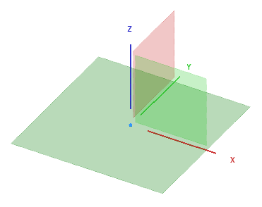
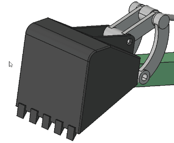
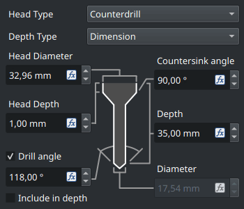

Release notes 1.1/de
FreeCAD 1.1 ist in Entwicklung, es steht noch kein Veröffentlichungstermin fest.
Fehlen Funktionen? Das spricht man am besten im Forumsbeitrag Release notes for v1.1 an.
Siehe FreeCAD Unterstützen für Möglichkeiten etwas zu FreeCAD beizutragen.Alle Bilder auf dieser Seite müssen das Suffix _relnotes_1.1 tragen.
FreeCAD 1.1 wurde am T Monat Jahr veröffentlicht, es kann von der Download-Seite heruntergeladen werden. Diese Seite listet alle Neuerungen und Änderungen auf.
Ältere FreeCAD-Versionshinweise findet man in den Versionshinweisen.
Platzhalter für ein auffälliges Bild, das von den Admins im user showcases forum ausgesucht wird.
Allgemein
- Verbesserte Wayland-Unterstützung. Pull-Request #21917, Pull-Request #23768 und Pull-Request #23946
Benutzeroberfläche

|
Dreipunktbeleuchtung wurde hinzugefügt, um die Darstellung von 3D-Modellen zu verbessern. |

|
Eine Suchleiste wurde zum |

|
Ein neuer Theme-Editor und ein neues Theme-Token-System wurde implementiert, um einen bessere Anpassbarkeit von Kalkulationstabellen zu ermöglichen. |

|
Ein konsolidierter und verbesserter Dialog Eigenschaft hinzufügen, der Ausdrücke, Aufzählungen und Einheiten unterstützt. Ein verbesserter Ausdruckseditor mit besserer Tabulator-Vervollständigung, Größenanpassung und VarSet-Eingabe. Pull-Request #22719, Pull-Request #23426, Pull-Request #22964 und Pull-Request #22944. |
Weitere Verbesserungen der Benutzeroberfläche
- Ein Standardkürzel für
 Std DlgEinstellungen wurde hinzugefügt. Pull-Request #15536
Std DlgEinstellungen wurde hinzugefügt. Pull-Request #15536 - Die Seite der Einstellungen für den Benachrichtigungsbereich wurde verbessert. Pull-Request #15207
- Die Funktionen Automatisches Sichern und additives Auswählen wurden zum Werkzeug
 Messen hinzugefügt. Pull-Request #17717
Messen hinzugefügt. Pull-Request #17717 - Ein Parameter ToggleTransparency für die Feinabstimmung wurde hinzugefügt, um dem Anwender zu ermöglichen, den Standardwert der Transparenz zu ändern, die mit dem Werkzeug
 Transparenzmodus umschalten aktiviert wird. Pull-Request #18986
Transparenzmodus umschalten aktiviert wird. Pull-Request #18986 - Eine Ansicht-Eigenschaft Show Plane wurde hinzugefügt, um die Ebene anzuzeigen, die als Basis für ein 2D-Objekt dient.Pull-Request #18910
- Es ist jetzt möglich, die Farben der Koordinatensystemachsen in den Einstellungen unter Bearbeiten → Einstellungen → Anzeige → 3D-Ansicht zu ändern. Pull-Request #16995
- Eine Ansicht-Eigenschaft Show Placement wurde hinzugefügt, um die Positionierung als Koordinatensystem am Ursprung eines Objekts anzuzeigen. Pull-Request #19671
- Der Navigationsstil SolidWorks wurde hinzugefügt. Pull-Request #19568
- Navigationswürfel Animationen summieren die Drehungen auf, je nach dem, wie oft die flachen Schaltflächen angeklickt werden. Pull-Request #19719
- Neue Orbit-Styles Trackball Classic und Rounded Arcball wurden hinzugefügt. Rounded Arcball ist jetzt die Standardeinstellung und stellt eine "pure roll camera rotation" bereit, wenn sich der Mauszeiger in der Nähe der Bildschirmränder befindet. Pull-Request #20535
- Unterstützung für Hinweise in der Statusleiste wurde hinzugefügt. Pull-Request #18961
- Alle booleschen Eigenschaften in der Eigenschaften-Ansicht verwenden jetzt eine Checkbox anstatt einer true/false-Ausklappliste. Pull-Request #21555
- Der Siemens-NX-Navigationsstil wurde hinzugefügt. Pull-Request #21813
- Befindet sich ein aktives Objekt im Baum, wird eine
 Gruppe diesem hinzugefügt, während sie erstellt wird. Pull-Request #21902
Gruppe diesem hinzugefügt, während sie erstellt wird. Pull-Request #21902 - Der Befehl
 Auf die Auswahl ausrichten verwendet kleinere Drehungen. Pull-Request #20088
Auf die Auswahl ausrichten verwendet kleinere Drehungen. Pull-Request #20088 - Der Befehl Auf die Auswahl ausrichten verwendet die längste Kante einer Fläche, um horizontal oder vertikal auszurichten. Pull-Request #20374
- Der Befehl Auf die Auswahl ausrichten richtet die Kameraansicht jetzt auch auf ausgewählte ebene Kurven und gekrümmte Flächen aus. Pull-Request #22066 und Pull-Request #22365
- Alle MDI-Fenster (einschließlich z.B. Spreadsheet und TechDraw) können jetzt abgedockt werden und mit den Tastaturkürzeln (V, U oder F11) oder mit dem Menüeintrag Ansicht → Dokumentfenster in den Vollbildmodus versetzt werden. Pull-Request #22544
- Die Liste der Standard-Arbeitsbereiche wurde verkürzt und selten genutzte Arbeitsbereiche sind nun standardmäßig ausgeblendet. Unter anderem die Arbeitsbereiche Inspection, <none>, Test Framework, OpenSCAD und Roboter. Pull-Request #23034
Kernsystem und API
Kern

|
Werkzeuge für |
 Click on the image if the animation does not start. |
Das Werkzeug |
 Das Bild anklicken, wenn die Animation nicht startet. |
Erweiterte Optionen für achsspezifische Ausrichtung des Befehls Zur einem anderen Objekt bewegen/verschieben des Werkzeugs |
 Bild anklicken, wenn die Animation nicht startet. |
Quick Measure stellt mehr Informationen auf Basis der ausgewählten Elemente in der Statusleiste dar. Neben Länge, Winkel, Flächeninhalt und Radius wird jetzt auch der Durchmesser von geschlossenen kreisförmigen Elementen und der Achsabstand angezeigt. Es funktioniert mit einzelnen und mit mehreren ausgewählten Elementen. Es gibt auch eine Menüoption, um es zu deaktivieren. |

|
Ist der |
|  | Die Ebenen des Ursprungs-Objekts werden jetzt vergrößert, wenn der Mauszeiger darüberschwebt. Es gibt jetzt auch eine neue Voreinstellung Datum size (Größe des Bezugselements) zum steuern der Größe von Bezugselementen. |
{kind=link}
|  Das Bild anklicken, wenn die Animation nicht startet. |
Das Werkzeug Clarify Selection wurde hinzugefügt und basiert auf Realthunders Pick Geometry. Es kann mit dem Tastaturkürzel G, G aktiviert werden oder mit der Option im Kontextmenü. Es aktiviert zeitweilige Transparenz und zeigt eine Liste aller nahegelegenen geometrischen Elemente unterschiedlicher Art an (Objekte, Flächen, Kanten, Knoten, andere), um die Auswahl von ausgeblendeten oder innenliegenden Objekten zu ermöglichen, wenn sich der Mauszeiger über einem Modell in der 3D-Ansicht befindet. |
{kind=link}
Weitere Core-Verbesserungen
- Unterstützung für boolesche Verknüpfungen wurde den Ausdrücken hinzugefügt. Pull-Request #22506
- Die Standard-Verzeichnisstrukturen für die Benutzerdaten und Konfigurationen wurden geändert, um FreeCADs Versionsnummer aufzunehmen. Dadurch wird das Aktualisieren weniger risikoreich und ermöglicht den sicheren Einsatz von älteren Versionen von FreeCAD neben der neuen Version. Zum Programmstart gibt es jetzt eine Option, um ältere Konfigurationen in die neue versionierte Struktur zu überführen, wenn eine vorherige Version auf dem Rechner erkannt wird. Pull-Request #23321
- Das Umbenennen dynamischer Eigenschaften wurde hinzugefügt. Pull request #21444, Pull request #21975 and Pull request #21976.
API
Entfernte Python API
Geänderte Python-API
Neue Python-API
- Es gibt eine neue statische Klasse
FreeCAD.ApplicationDirectoriesund stellt Funktionen im Zusammenhang mit der neuen versionierten Verzeichnisstruktur bereit.
Start
- Die Start-Seite kann jetzt die Inhalte weiterer Ordner anzeigen, die durch den Anwender bestimmt werden. Ihre Dateipfade sollten durch doppelte Semikolons (
;) getrennt werden. Pull-Request #19473, Pull-Request #19918 und Pull-Request #19948. - Der Abschnitt der Startseite mit den Beispielen kann mit einer Option in den Einstellungen ausgeblendet werden. Pull-Request #19376 und Pull-Request #19918.
- Vorschaubilder (Thumbnails) für weitere 3D-Modellformate (wie STEP und STL) werden jetzt in den Abschnitten Zuletzt verwendete Dateien und Beispiele auf der Startseite angezeigt, wenn das Anzeigewerkzeug F3D installiert und zum Systempfad (system PATH) hinzugefügt wurde.Pull-Request #19489
Addon-Manager
- Das Aktualisierungswerkzeug für Python-Abhängigkeiten arbeitet jetzt korrekt, wenn FreeCAD als Snap-Package oder als AppImage installiert wurde. Pull-Request #19384, Pull-Request #19766 und Pull-Request #19814.
- Der Installationspfad der Python-Module wird im Aktualisierungswerkzeug für Python-Abhängigkeiten jetzt als absoluter Pfad angezeigt, für eine bessere Lesbarkeit. Er wird auch entsprechend der FreeCAD-Installationsmethode korrekt dargestellt. Pull-Request #19828 and Pull-Request #19816.
- Der Addon-Manager ist selbst ein Addon und kann aktualisiert werden, indem man zu seiner Seite in der Addon-Liste des Addon-Manager's navigiert.
- Addons können jetzt explizit ihre Unterstützung für eine bestimmte FreeCAD-Version ausdrücken und mehrere Versionen und Zweige werden von jedem unterstützt.
- Python-Abhängigkeiten verwenden jetzt eine pip-constraints-Datei, um eine konfliktfreie Installation zu gewährleisten.
Arbeitsbereich Assembly
- Das Werkzeug
 Ein neues Part einfügen wurde hinzugefügt, und ermöglicht Part-Objekte einfach innerhalb einer Baugrube hinzuzufügen.Pull-Request #17922
Ein neues Part einfügen wurde hinzugefügt, und ermöglicht Part-Objekte einfach innerhalb einer Baugrube hinzuzufügen.Pull-Request #17922 - Das Werkzeug
 Simulation erstellen wurde hinzugefügt und ermöglicht Bewegungen zu Verbindungen hinzuzufügen und Animationen zu erstellen. Pull-Request #16414
Simulation erstellen wurde hinzugefügt und ermöglicht Bewegungen zu Verbindungen hinzuzufügen und Animationen zu erstellen. Pull-Request #16414 - Der Befehl
 Stückliste erstellen kann jetzt auch die Werte angegebener Eigenschaften ausgeben. Pull-Request #20732
Stückliste erstellen kann jetzt auch die Werte angegebener Eigenschaften ausgeben. Pull-Request #20732
Weitere Assembly-Verbesserungen
- Die neuen Hauptbezüge können zum Befestigen von Verbindungen verwendet werden, um mehrere Bauteile zusammenzubauen. Pull-Request #18332
Arbeitsbereich BIM

|
Die interaktive Visualisierung von Sonnenstand und Sonnenstrahlen wurden zum Werkzeug |
Weitere BIM-Verbesserungen
- Das Fenster
 BIM Asichten wurde überholt und hat jetzt einen Abschnitt für alle 2D-Ansichten. Pull-Request #15836
BIM Asichten wurde überholt und hat jetzt einen Abschnitt für alle 2D-Ansichten. Pull-Request #15836 - Das Fenster Ansichten hat eine Funktionalität zum Aktivieren und Deaktivieren von Objekten im Bereich spatial decomposition erhalten. Pull-Request #15836 und Pull-Request #21570
- NativeIFC-Unterstützung für 2D-Objekte wurde zu BIM hinzugefügt und ermöglicht 2D-Objekte (Linien, Texte, Maße) in IFC-Dateien einzubetten und auch solche Dateien anderer BIM-Anwendungen zu öffnen.Pull-Request #16629
- Dem
 Ablaufplan-Dialog wurde die Unterstützung für einfache Anordnungen (z.B. nicht verschachtelte) hinzugefügt. Dies ermöglicht normale Anordnungen und Verknüpfungsanordnungen (beide sowohl erweitert als auch nicht erweitert) zu verarbeiten und in weiteren Berechnungen im BIM-Schedule-Report zu verwenden. Pull-Request #19219
Ablaufplan-Dialog wurde die Unterstützung für einfache Anordnungen (z.B. nicht verschachtelte) hinzugefügt. Dies ermöglicht normale Anordnungen und Verknüpfungsanordnungen (beide sowohl erweitert als auch nicht erweitert) zu verarbeiten und in weiteren Berechnungen im BIM-Schedule-Report zu verwenden. Pull-Request #19219 - Die Option Fortsetzen wird jetzt für jeden Draft- und BIM-Befehl separat gespeichert. Pull-Request #20748
- Werden BIM-Ansichten in TechDraw hinzugefügt, orientieren sie sich jetzt am Maßstab des Zeichnungsblattes (Page), und haben so eine sinnvolle (erfassbare?) Größe. Pull-Request #20935
- Die Standard-Darstellungsgröße für neue BIM-Projekte wurde geändert, um besser zu den im Bauwesen üblichen Maßstäben zu passen. Pull-Request #20271
- Wird ein neues
 Stockwerk erstellt, enthält das Stockwerk jetzt auch die in der Baumansicht ausgewählten Objekte. Pull-Request #20180
Stockwerk erstellt, enthält das Stockwerk jetzt auch die in der Baumansicht ausgewählten Objekte. Pull-Request #20180  Räume können jetzt von einem einzelnen Objekt erstellt werden (z.B. die inneren Flächen einer Wand, die auf einer rechteckigen Grundfläche basieren).Pull-Request #20158
Räume können jetzt von einem einzelnen Objekt erstellt werden (z.B. die inneren Flächen einer Wand, die auf einer rechteckigen Grundfläche basieren).Pull-Request #20158- FreeCAD-Standardgruppen können jetzt ignoriert werden, wenn ein Modell in eine IFC-Datei exportiert wird. Dies wird durch eine Voreinstellung gesteuert und ist die neue Standardeinstellung. Pull-Request #21583
- Die Eigenschaft Sill wurde den
 Tür und
Tür und  Fenster-Objekten hinzugefügt, um die Höhe der Fensterbank bzw. der Türschwelle parametrisch ändern zu können. Pull-Request #21005
Fenster-Objekten hinzugefügt, um die Höhe der Fensterbank bzw. der Türschwelle parametrisch ändern zu können. Pull-Request #21005 - Eine Option zum Laden aller IFC-Typen im Voraus während des Prozesses des Importierens und Öffnens von IFC-Dateien wurde hinzugefügt. Pull-Request #21450
- Der Befehl
 Schnittebene erhielt zahlreiche Reparaturen und Verbesserungen der Bedienungsfreundlichkeit. Besonders erwähnenswert ist, dass der Fehler, bei dem das Drehen der Schnittebene die Beschnittrichtung umkehrte, behoben wurde und dass die Möglichkeit die Schnittansicht im Aufgaben-Fenster umzuschalten, hinzugefügt wurde.Pull-Request #23826
Schnittebene erhielt zahlreiche Reparaturen und Verbesserungen der Bedienungsfreundlichkeit. Besonders erwähnenswert ist, dass der Fehler, bei dem das Drehen der Schnittebene die Beschnittrichtung umkehrte, behoben wurde und dass die Möglichkeit die Schnittansicht im Aufgaben-Fenster umzuschalten, hinzugefügt wurde.Pull-Request #23826 - Ein Doppelklick auf ein BIM-Objekt, das Bearbeiten unterstützt, sollte sein Aufgaben-Fenster öffnen, anstatt seine Benennung zu editieren. Pull-Request #23805, Pull-Request #23796 und Pull-Request #24712
- Der Befehl
 Entfernen kann jetzt Fenster und Türen aus Wänden entfernen. Pull-Request #21561
Entfernen kann jetzt Fenster und Türen aus Wänden entfernen. Pull-Request #21561 - Bei der Erstellung eines Benutzerdefinierten Fensters, werden dem Anwender die Tiefe des Fensterrahmens und die zugehörigen Eigenschaften eindeutig beschrieben. Pull-Request #21486
- Wird ein Modell, das ein Dach enthält, exportiert, wird das Dach nicht mehr aus dem Export entfernt. Pull-Request #21409
- Ein Doppelklick auf ein Stockwerk aktiviert jetzt standardmäßig das Stockwerk und seine Arbeitsebene. Pull-Request #21159
- Das Tastaturkürzel W, P wurde hinzugefügt, um die Arbeitsebenen auszuwählen. Pull-Request #21157
- Unterstützung für B-Splines in Strukturelementen, wie
 Slab, wurde hinzugefügt. Pull-Request #21134
Slab, wurde hinzugefügt. Pull-Request #21134 - Bei der Erstellung einer
 Wand, kann die Daten-EigenschaftOffset der Wand zusätzlich auch eingegeben werden. Pull-Request #21042
Wand, kann die Daten-EigenschaftOffset der Wand zusätzlich auch eingegeben werden. Pull-Request #21042 - Die Befehle zum Erstellen von 2D-Ansichten sind jetzt gruppiert, um die Bedienungsfreundlichkeit zu verbessern. Pull-Request #20941
Arbeitsbereich CAM

|
Der CAM Werkzeug-Bit-Bibliothek-Editor wurde durch die Integration der Bibliothek Better Tool Library ersetzt, die eine neue Werkzeug-Bit-Verwaltung und -Auswahl einführt. |

|
Der Toolbit-Library-Editor wurde ersetzt und unterstützt Funktionen zum Kopieren und Einfügen sowie zum Ziehen und Ablegen. |
Weitere CAM-Verbesserungen
- Das experimentelle Werkzeug
 CAM Shape wurde durch Path from Shape with Tool Controller ersetzt, was eine erhebliche verbesserte Version des Werkzeugs, die auf einem Makro basiert. Pull-Request #21108
CAM Shape wurde durch Path from Shape with Tool Controller ersetzt, was eine erhebliche verbesserte Version des Werkzeugs, die auf einem Makro basiert. Pull-Request #21108 - Anpassungsfähiges Schruppen/Überhang Erkennung wurde implementiert, einschließlich intelligenter 2.5D-Projektion von Modell und "stock" für alle anpassungsfähigen Vorgänge, "Anpassungsfähiges Schruppen" des ganzen Modells mit einem Klick, die Einstellung "Z stock to leave" zum Ergänzen der Einstellung "finishing stepdown" und einer Checkbox zum Ordnen der Schnitte nach Tiefe oder Bereich. Pull-Request #18880
- G84/G74 Operationen zum Gewindeschneiden wurden experimentell hinzugefügt. Pull-Request #8069 und Pull-Request #24148
- Multi-Pass-Unterstützung wurde für Profil-Operationen hinzugefügt. Pull-Request #17326
- Unterstützung für Snapmaker-, Masso- und Ondsel-SVG-Postprocessors wurde hinzugefügt. Pull-Request #20154 und Pull-Request #18845 und Pull-Request #21743
- Der neue
 CAM-Simulator wurde verbessert, einschließlich zweier zusätzlicher Schaltflächen zum Zurücksetzen der Kamera und zum Verringern der Geschwindigkeit. Pull-Request #21288, Pull-Request #21222 and more
CAM-Simulator wurde verbessert, einschließlich zweier zusätzlicher Schaltflächen zum Zurücksetzen der Kamera und zum Verringern der Geschwindigkeit. Pull-Request #21288, Pull-Request #21222 and more - Die Operation Array wird jetzt als veraltet angesehen, da sie zurzeit auch als Dressup implementiert ist. Pull-Request #20321
- Unterstützung für Multi-Pass-Profil-Operationen wurde hinzugefügt. Pull-Request #17326
- Die CAM_DressupLeadInOut/deEin-/Auslauf-Funktionalität wurde verbessert. Pull-Request #22669
- Elemente der Benutzerschnittstelle wurden hinzugefügt, um Werkzeugsteuerungsparameter im Aufgaben-Fenster des Vorganges anzuzeigen und zu bearbeiten. Pull-Request #23180
Arbeitsbereich Draft
- Objekte mit zwei Pfeilspitzen können jetzt unterschiedliche Start- und Endpfeilspitzen besitzen. Die Größe der Start- und Endpfeilspitzen eines Objekts kann auch unterschiedlich sein. Pull-Request #11941
- Der Befehl
 Draft Bearbeiten kann jetzt auch Draft Hinweise bearbeiten. Pull-Request #13445
Draft Bearbeiten kann jetzt auch Draft Hinweise bearbeiten. Pull-Request #13445 - Unterstützung für relative Dateipfade wurde den
 Textformen und
Textformen und  Schraffuren hinzugefügt. Pull-Request #17819 und Pull-Request #23294
Schraffuren hinzugefügt. Pull-Request #17819 und Pull-Request #23294 - Die Verarbeitung von Verknüpfungen in TechDraw DraftAnsichten wurde korrigiert. Pull-Request #18175 und Pull-Request #19296
- Der Extrusionsmodus des Befehls
 Draft Trimex nimmt jetzt auch Verknüpfungen wahr (ist "link-aware"). Er kann jetzt Flächen verarbeiten, die zu Verknüpfungen oder zu Objekten in verknüpften Behältern gehören. Und der Punkt der die Extrusion festlegt kann komplanar zu der Fläche liegen. Pull-Request #18314 und Pull-Request #18320
Draft Trimex nimmt jetzt auch Verknüpfungen wahr (ist "link-aware"). Er kann jetzt Flächen verarbeiten, die zu Verknüpfungen oder zu Objekten in verknüpften Behältern gehören. Und der Punkt der die Extrusion festlegt kann komplanar zu der Fläche liegen. Pull-Request #18314 und Pull-Request #18320 - Die Befehle Verschieben, Drehen und Skalieren verarbeiten jetzt ebenfalls Verknüpfungen wahr (sind "link-aware"). Pull-Request #18795
- Wird ein Flächenbinder extrudiert, der auf verbundenen Flächen basiert, wird versucht, seine Ecken zu schließen. Die Eigenschaft Sew des Objektes muss dafür auf true gesetzt werden. Man beachte, dass der Code für komplexe Formen versagen kann. Pull-Request #18901
 Pfad-Anordnungen wurden um mehrere neue Eigenschaften erweitert. Es ist jetzt möglich die Anordnung umzukehren, einen festen Abstand einzustellen und Abstandsmuster einzusetzen. Pull-Request #19017
Pfad-Anordnungen wurden um mehrere neue Eigenschaften erweitert. Es ist jetzt möglich die Anordnung umzukehren, einen festen Abstand einzustellen und Abstandsmuster einzusetzen. Pull-Request #19017- Objekte auf Ebenen (Layern) können jetzt abweichende Einstellungen (overrrides) enthalten. Pull-Request #19207
- Der Befeshl
 Draft ZurEbeneHinzufügen, zum schnellen Versetzen von Objekten auf die richtige Ebene, wurde hinzugefügt. Pull-Request #19427
Draft ZurEbeneHinzufügen, zum schnellen Versetzen von Objekten auf die richtige Ebene, wurde hinzugefügt. Pull-Request #19427 - Der TechDraw-Code auf dem Draft Schraffur beruht, wurde überarbeitet, um auch Strichlinien in Schraffuren verwenden zu können. Pull-Request #19458
- Die Befehle Draft Herabstufen und Draft Hochstufen wurden aktualisiert. Anordnungen können herabgestuft (gesprengt) werden, und neue Objekte werden in denselben Behälter eingefügt (Gruppe, Part), wie die originalen Objekte, und erhalten die Sichtbarkeitseigenschaften der originalen Objekte.Pull-Request #19487 und Pull-Request #19685
- Der Befehl
 Draft Vieleck zeigt jetzt eine Vorschau (tracker) eines richtigen Vielecks anstatt eines Kreises. Pull-Request #21045
Draft Vieleck zeigt jetzt eine Vorschau (tracker) eines richtigen Vielecks anstatt eines Kreises. Pull-Request #21045 - Eine Checkbox Zur Fläche ausrichten wurde zum Aufgaben-Fenster des Befehls Draft Schraffur hinzugefügt. Pull-Request #21332
- Ein befehlsinternes Tastaturkürzel D zum (erneuten) zentrieren der Arbeitsebene, während ein Befehl ausgeführt wird, wurde hinzugefügt. Pull-Request #19728
- Um die Benutzereingabe für Einzelachsanordnungen zu vereinfachen, wurde eine Option linear mode zum Aufgaben-Fenster des Befehls
 Draft RechtwinkligeAnordnung hinzugefügt. Pull-Request #21602
Draft RechtwinkligeAnordnung hinzugefügt. Pull-Request #21602 - Statusleistenhinweise wurden für Zeichenwerkzeuge hinzugefügt. Pull-Request #23244
Weitere Draft-Verbesserungen
- Der Befehl Draft Verrundung bearbeitet jetzt ausgewählte Kanten, anstatt der ersten Kante von ausgewählten Objekten. Pull-Request #17945 und Pull-Request #18150
- Die Befehle Draft AutoGruppieren und Draft ZurGruppeHinzufügen wurden verbessert. Die Menüs beider Befehle sind alphabetisch sortiert. Im Menü des Befehls Draft AutoGruppieren sind Ebenen von Gruppen getrennt und die Option Neue Ebene erwartet die Eingabe eines Namens und aktiviert die Ebene. Beide Befehle können jetzt rückgängig gemacht werden.Pull-Request #18172 und Pull-Request #19312
- Die Position des Feldes Skalierungsfaktor in der Benutzerschnittstelle wurde verbessert (Draft StilFestlegen, Draft Beschriftungsstileditor und Draft Einstellungen). Pull-Request #18299
- Der Befehl Draft ZeichnungZuSkizze wendet die Randbedingung Koinzident festlegen jetzt auch auf Kanten verschiedener Quellobjekte an. Pull-Request #18805
- Die Angaben zu Radius und Fase sowie den Löschverfahren des Befehls Draft Verrundung werden gespeichert. Pull-Request #19067
- Eine Option zum Bearbeiten wurde für Draft-Klone hinzugefügt. Werden sie in der Baumansicht doppelt angeklickt, kann ihre Skalierung im Aufgaben-Fenster angepasst werden. Pull-Request #19477
- Es können jetzt eine ebene Fläche und eine Kante für den Befehl Draft EbeneAuswählen ausgewählt werden. Pull-Request #19728
- Für verbesserte Deutlichkeit, wurde die Checkbox Füllen im Aufgaben-Fenster von beispielsweise Draft Linienzug in Make face umbenannt. Pull-Request #19738
- Die Texte neu erstellter Maße werden jetzt automatisch zur aktuellen Arbeitsebene ausgerichtet. Ein Parameter steht zur Feinabstimmung zur Verfügung, um dieses Verhalten zu deaktivieren. Pull-Request #20072
- In der Nähe einrasten setzt sich nicht mehr gegen andere Einrastfunktionen durch. Das Einrasten auf Objekten, wie mit Einrasten auf Kantenmitte und Einrasten auf Endpunkt wird jetzt innerhalb des Einrastbereichs des Mauszeigers erkannt. Pull-Request #20118
- In den Draft-Voreinstellungen wurde eine Ausklappliste zum Auswählen der Schriftartnamen für Texte, Maße und Beschriftungen eingeführt. Zuvor musste der Name manuell eingegeben werden. Pull-Request #20400
- Die Option Fortsetzen wird jetzt für jeden Draft- bzw. Bim-Befehl separat gespeichert. Für den Befehl Draft Maß wurde für eine einheitliche Benennung die alte Option Fortsetzen in Verketten (chained mode) umbenannt und eine neue Option Fortsetzen hinzugefügt. Pull-Request #20748
- Der Befehl Draft Textform erhielt einige Verbesserungen. Die Schriftartdatei ist keine Voreinstellung mehr, stattdessen wird die zuletzt ausgewählte Datei gespeichert. Für den Startwert der Schriftartdatei wird versucht eine passende Datei des Betriebssystems zu finden. Dies dient hauptsächlich dazu, den Anwendern zu helfen, die nicht wissen, wo sich die Schriftartdateien befinden. Der zuletzt eingegebene Text und die Höhe werden auch gespeichert. Eine Option Global wurde dem Aufgaben-Fenster hinzugefügt. Wird diese CheckBox deaktiviert, können Koordinaten im Koordinatensystem der Arbeitsebene eingegeben werden. Endlich können jetzt auch TrueType-Collection-Schriftartdateien (.ttc) ausgewählt werden; aber nur die erste Schriftart in einer solchen Datei kann verwendet werden. Pull-Request #21004, Pull-Request #21054 und Pull-Request #21124
- Das Basisobjekt von Draft Linienzug, Draft B-Spline und Draft Bézierkurve wurde in ein Part::FeaturePython-Objekt geändert. Pull-Request #21636
- Einrasten auf Schnittpunkt erkennt jetzt auch Schnittpunkte zwischen Flächen und Kanten. Pull-Request #23352
- Die Option Ausrichtung der Arbeitsebene wurde aus dem Befehl Draft Skalieren entfernt, das sie nicht richtig funktionierte. Pull request #23716
Arbeitsbereich FEM

|
Ein Ausklappmenü wurde hinzugefügt, um die Auswahl des richtigen Festkörpers zu ermöglichen, wenn die ausgewählte Fläche eines CompSolid-Objekts zu zwei Festkörpern gehört. Dies vereinfacht innere Festkörper auszuwählen, um ihnen z.B. ein Material zuzuordnen. |

|
Die Eigenschaft ZRefine wurde zu |
 Click on the image if the animation does not start. |

|
Unterstützung für Elmers |

|
* Die Belastung |

|
Die |

|
Ein |

|
Ein Nachbereitungsfilter |

|
Elektrostatik-Analysen (auch 2D-Analysen) werden jetzt von dem frisch überarbeiteten |

|
Ein Werkzeugset zum Extrahieren von Daten wurde den Ergebnis-Pipelines hinzugefügt. |

|
Druck und Wärmeflussbelastung sowie die Randbedingungen Tie und Kontakt können jetzt auch auf Kanten in 2D-Analysen mit CalculiX aufgebracht werden. Entsprechend kann eine Belastung mit einer Körperwärmequelle und mit Zentrifugalkräften auf Flächen von 2D-Modellen aufgebracht werden. |
Weitere FEM-Verbesserungen
- Log verbosity und die Anzahl von Threads, die zum Vernetzen verwendet werden, kann jetzt in den Einstellungen für
 Gmsh und
Gmsh und  Netgen eingestellt werden. Pull-Request #17699 und Pull-Request #18608
Netgen eingestellt werden. Pull-Request #17699 und Pull-Request #18608 - Die Daten-EigenschaftSecond Order Linear und die Unterstützung für
 lokales Aufbereiten, die vorher nur für Gmsh zur Verfügung standen, stehen jetzt auch der neuen Implementation von Netgen zur Verfügung. Pull-Request #17170
lokales Aufbereiten, die vorher nur für Gmsh zur Verfügung standen, stehen jetzt auch der neuen Implementation von Netgen zur Verfügung. Pull-Request #17170 - Box und elliptische Balkenquerschnitte wurden zur
 FEM Elementgeometrie1D hinzugefügt. Pull-Request #15843
FEM Elementgeometrie1D hinzugefügt. Pull-Request #15843 - Das Werkzeig
 Ergebnisse bereinigen löscht jetzt alle Ergebnisobjekte, nicht nur die zu CalculiX gehörigen. Pull-Request #18328
Ergebnisse bereinigen löscht jetzt alle Ergebnisobjekte, nicht nur die zu CalculiX gehörigen. Pull-Request #18328 - Die
 RandbedingungVerbinder kann jetzt auch auf Schalenflächen angewendet werden. Pull-Request #18325
RandbedingungVerbinder kann jetzt auch auf Schalenflächen angewendet werden. Pull-Request #18325 - Das Ausgabeformat (binär oder ASCII) und das Speichern von Geometrie-IDs kann jetzt für Elmer eingestellt werden, auch in den Voreinstellungen. Pull-Request #17972
- Eine Option zum Glätten wurde dem
 Contours filter hinzugefügt. Pull-Request #18088
Contours filter hinzugefügt. Pull-Request #18088 - Der Parameter BucklingAccuracy wurde zum Gleichungslöser
 CalculiX hinzugefügt - es kann erforderlich sein, den ersten "eigenvalue-?" in einigen linearen Knickanalysen zu bestimmen (Das kann ein Fachmann sicher besser ausdrücken). Pull-Request #18790
CalculiX hinzugefügt - es kann erforderlich sein, den ersten "eigenvalue-?" in einigen linearen Knickanalysen zu bestimmen (Das kann ein Fachmann sicher besser ausdrücken). Pull-Request #18790 - Jetzt können alle FEM-Objekte unterdrückt werden, für die Unterdrücken sinnvoll ist. Vorher konnten nur Randbedingungen unterdrückt werden.Pull-Request #18636
- Kontaktkräfte in CalculiX-Analysen werden jetzt in die Datei ccx_dat_file ausgegeben. Pull-Request #18840
- Das Werkzeug
 MaterialBewehrt verwendet jetzt die neue Materialverwaltung. Pull-Request #18893
MaterialBewehrt verwendet jetzt die neue Materialverwaltung. Pull-Request #18893 - Die
 Randbedingung Elektrostatisches Potential wurde erweitert, um auch "Neumann-type"-Randbedingungen und "prescribe electric flux density" zu unterstützen. Sie besitzt jetzt auch ein Symbol. Pull-Request #18514 und Pull-Request #19011
Randbedingung Elektrostatisches Potential wurde erweitert, um auch "Neumann-type"-Randbedingungen und "prescribe electric flux density" zu unterstützen. Sie besitzt jetzt auch ein Symbol. Pull-Request #18514 und Pull-Request #19011 - Die Referenztemperatur für thermische Ausdehnung (thermal expansion reference temperature) kann jetzt für
 Feststoff-Material in thermomechanischen Analysen mit CalculiX festgelegt werden. Pull-Request #19285
Feststoff-Material in thermomechanischen Analysen mit CalculiX festgelegt werden. Pull-Request #19285 - Die Python-Funktion Fem.frdToVTK wurde hinzugefügt und ermöglicht die Umwandlung von CalculiX's frd-Ergebnisdaten in das VTK-Format, das von ParaView verwendet wird. Pull-Request #19426
- Die
 Randbedingung Stromdichte wurde verbessert. Sie hat jetzt zwei Modi (Custom und Normal) und ein Symbol für den Modus Normal. Pull-Request #19930
Randbedingung Stromdichte wurde verbessert. Sie hat jetzt zwei Modi (Custom und Normal) und ein Symbol für den Modus Normal. Pull-Request #19930 - Zwei neue
 FEM-Beispiele wurden hinzugefügt - eins für die neu implementierte
FEM-Beispiele wurden hinzugefügt - eins für die neu implementierte  Gleichung Gleichstrom (Joule-Erwärmung) und eine für die
Gleichung Gleichstrom (Joule-Erwärmung) und eine für die  Randbedingung Starrer Körper. Pull-Request #20007 and Pull-Request #20011
Randbedingung Starrer Körper. Pull-Request #20007 and Pull-Request #20011 - Das Aufgaben-Fenster für die
 Wärmeflussbelastung wurde verbessert - Radio-Knöpfe zur Auswahl der Wärmeflussart wurden durch eine ComboBox ersetzt. Pull-Request #20059
Wärmeflussbelastung wurde verbessert - Radio-Knöpfe zur Auswahl der Wärmeflussart wurden durch eine ComboBox ersetzt. Pull-Request #20059 - Das Aufgaben-Fenster für die
 Randbedingung Magnetisierung wurde verbessert. Pull-Request #20055
Randbedingung Magnetisierung wurde verbessert. Pull-Request #20055 - Der Modus Selection wurde zur Geometrieauswahl in den Aufgaben-Fenstern der Elmer-Gleichungen hinzugefügt. Pull-Request #20053
- Die Python-Funktion renameArrays wurde hinzugefügt, um ausgewählte Felder der
 Ergebnis-Pipeline umbenennen zu können. Pull-Request #20411
Ergebnis-Pipeline umbenennen zu können. Pull-Request #20411 - Eine CalculiX-zugehörige Einstellung Result object wurde hinzugefügt. Ist ihre CheckBox Pipeline only aktivert, wird ein neu umgestaltetes (refactored) Objekt für den CalculiX-Gleichungslöser zum Analysebehälter hinzugefügt, wenn die Option Solver CalculiX verwendet wird. Es besitzt ein aktualisiertes Aufgaben-Fenster, erstellt keine
 CCX_Results-Objekte (nur das Ergebnis-Pipeline-Objekt wird erstellt) und wird noch weiterentwickelt. Pull-Request #20609
CCX_Results-Objekte (nur das Ergebnis-Pipeline-Objekt wird erstellt) und wird noch weiterentwickelt. Pull-Request #20609 - Die Eigenschaft Offset wurde zur
 Shell Plate Thickness hinzugefügt und ermöglicht einen vergrößerten Hüllkörper mit Abstand zum tatsächlichen Netz zu erstellen. Pull-Request #22385
Shell Plate Thickness hinzugefügt und ermöglicht einen vergrößerten Hüllkörper mit Abstand zum tatsächlichen Netz zu erstellen. Pull-Request #22385 - Unterstützung für thermischen
 Kontakt in CalculiX wurde durch die Eigenschaften Enable Thermal Contact und Thermal Contact Conductance hinzugefügt, die zur Angabe von gap conductance (?Spalt-Leitfähigkeit?) dienen. Pull-request #22121
Kontakt in CalculiX wurde durch die Eigenschaften Enable Thermal Contact und Thermal Contact Conductance hinzugefügt, die zur Angabe von gap conductance (?Spalt-Leitfähigkeit?) dienen. Pull-request #22121 - Unterstützung für harten und gebundenen (?) Kontakt in CalculiX wurde hinzugefügt. Pull-Request #22513 und Pull-Request #23327
- Unterstützung für Hohlraum- Strahlung (cavity radiation) in CalculiX wurde hinzugefügt. Pull-Request #22593
- Unterstützung für Amplituden (zeitliche Variation) für die meisten mechanischen und thermischen Randbedingungen und Belastungen in CalculiX wurde hinzugefügt. Es gibt neue Eigenschaften: Enable Amplitude (Amplitude aktivieren) und Amplitude Values (Amplitudenwerte). Pull-Request #22851
- Die
 Startbedingung Temperatur kann jetzt auf einen ausgewählten Bereich aufgebracht werden (mit Hilfe der Eigenschaft References) in CalculiX-Analysen. Pull-Request #22864
Startbedingung Temperatur kann jetzt auf einen ausgewählten Bereich aufgebracht werden (mit Hilfe der Eigenschaft References) in CalculiX-Analysen. Pull-Request #22864 - Die Eigenschaft Glue wurde zum Vernetzer Netgen hinzugefügt. Wenn aktiviert, wird ein durchgehendes Netz erstellt (Diese Eigenschaft entspricht Coherence Mesh von Gmsh). Pull-Request #23074
- Standard (-eigenschaft) Priority der Elmer-Gleichungen startet jetzt mit 255 und verrigert sich mit jeder hinzugefügten Gleichung. Auf diese Weise werden die Gleichungen in der Reihenfolge berechnet, in der sie zum Baum hinzugefügt wurden. Pull-Request #22999
- CalculiX' Membran- und Streben-Elemente (truss elements) werden jetzt unterstützt und ersetzen Schalenelemente bzw. Balkenelemente, wenn die neue Eigenschaft ExcludeBendingStiffness des Gleichungslösers CalculiX aktiviert ist. Pull-Request #22912 und Pull-Request #23224
- Verschiebungen von Referenzpunkten starrer Körper werden jetzt in ccx_dat_file ausgegeben. Pull-Request #23199
- Die Starttemperatur kann jetzt auch zum Vorausfüllen des Temperaturfeldes in einem statischen Analyseschritt verwendet werden (mit optionaler Amplitude). Pull-Request #23277 und Pull-Request #23530
- Netgen kann jetzt auf die Standardart installiert werden, wie auf dessen Download-Page dargestellt, und es ist nur erforderlich FreeCAD in den Voreinstellungen auf die richtige ausführbare Python-Datei verweisen zu lassen (standardmäßig wird die ausführbare Python-Datei verwendet, die in den allgemeinen Python-Voreinstellungen angegeben ist). Pull-Request #23613
- Einige Voreinstellungen im Zusammenhang mit Netz-Exporten haben jetzt bessere Standardeinstellungen. Namentlich Gruppen von Knoten sind für den Gmsh-Vernetzer aktiviert und exportieren in INP-Dateien, fügen nur FEM-Elemente hinzu und gruppiert standardmäßig. Pull-Request #23553
- Eigenschaften des Gleichungslösers CalculiX sind jetzt gruppiert und die Eigenschaften zur Zeit Iinkrementation sind benutzerfreundlicher (verbesserte Benennung, bessere Voreinstellungen, einfaches Umschalten zwischen automatischem und direktem Inkrementieren und dass es nicht nötig ist, weitere Eigenschaften zu aktivieren, um nicht standardmäßiges Inkrementieren einzustellen). Pull-Request #23494
- Es gibt eine neue Eigenschaft Pastix Mixed Precision des Gleichungslösers CalculiX. Sie ist standardmäßig deaktiviert, so dass mixed precision für den Matrizenlöser PaStiX nicht verwendet wird, um Probleme mit inkorrekten Ergebnissen einiger Analysen zu vermeiden. Pull-Request #23539
 Elmers Solver-Objekt und das zugehörige Aufgaben-Fenster wurden überarbeitet, ähnlich zu dem, was zuvor mit CalculiX gemacht wurde. Er arbeitet jetzt auch mit der neuen Implementierung von Netgen zusammen. Außerdem können jetzt auch ParaView-PVD-Dateien importiert werden. Pull-Request #24912
Elmers Solver-Objekt und das zugehörige Aufgaben-Fenster wurden überarbeitet, ähnlich zu dem, was zuvor mit CalculiX gemacht wurde. Er arbeitet jetzt auch mit der neuen Implementierung von Netgen zusammen. Außerdem können jetzt auch ParaView-PVD-Dateien importiert werden. Pull-Request #24912
Arbeitsbereich Material
- Materialien können jetzt in externen Datenspeichern gesichert werden. Pull-Request #21047
Weitere Material-Verbesserungen
- Mehrere neue Materialien mit physikalischen Eigenschaften wurden zur Materialdatenbank hinzugefügt.
- Polycarbonat Pull-Request #19432
- PMMA Pull-Request #24006
- Homopolymer and copolymer POM Pull-Request #23820
- PEEK Pull-Request #23779
- Aluminium 7075-T6 Pull-Request #23976
- Updated Aluminium 6061-T6 Pull-Request #23977
Arbeitsbereich Part
Weitere Part-Verbesserungen
- Das Werkzeug
 Set Tolerance wurde hinzugefügt, um das Erstellen parametrischer Kopien des ausgewählten Objekts zu ermöglichen, bei denen alle enthaltenen Toleranzen wenigstens auf einen bestimmen Mindestwert eingestellt sind. Außerdem enthält das Werkzeug
Set Tolerance wurde hinzugefügt, um das Erstellen parametrischer Kopien des ausgewählten Objekts zu ermöglichen, bei denen alle enthaltenen Toleranzen wenigstens auf einen bestimmen Mindestwert eingestellt sind. Außerdem enthält das Werkzeug  Geometrie überprüfen jetzt Möglichkeiten zur Ausgabe von Toleranzinformationen im Reiter Form-Inhalt. Pull-Request #17214
Geometrie überprüfen jetzt Möglichkeiten zur Ausgabe von Toleranzinformationen im Reiter Form-Inhalt. Pull-Request #17214 - Das Werkzeug Geometrie überprüfen enthält jetzt auch Ergebniseinträge für gültige Formen, zeigt ausgelassene Objekte und erstellt Berichte im Ausgabefenster. Pull-Request #17631
 Loft und
Loft und  Sweep erstellen jetzt standardmäßig Festkörper. Pull-Request #22098
Sweep erstellen jetzt standardmäßig Festkörper. Pull-Request #22098- Die redundanten Werkzeuge
 Part Import und
Part Import und  Part Export wurden sie aus dem Menü entfernt. Pull-Request #22116
Part Export wurden sie aus dem Menü entfernt. Pull-Request #22116
Arbeitsbereich Part Design
|  Abbildung anklicken, wenn die Animation nicht startet. |
Das Aufgaben-Fenster des Werkzeugs Pull-Request #19052 und Pull-Request #19167 |
{kind=link}
 Bild anklicken, wenn die Animation nicht startet. |
Unterstützung für konische Gewinde und weitere Gewindeprofile wurden zum Werkzeug |

|
Eine transparente Vorschau wurde für additive und subtraktive Part Design-Formelemente hinzugefügt. Sie kann temporär über eine Check-Box im Aufgaben-Fenster, oder dauerhaft in den Einstellungen deaktiviert werden. Es gibt auch eine optionale Hervorhebung der Skizze, die als Profil für einen Part Design-Vorgang eingesetzt wird. Pull-Request #17249 und Pull-Request #23477 |
 Bild anklicken, wenn die Animation nicht startet. |
Interaktive Dragger wurden als ein Google Summer of Code-Projekt zu den Part Design-Formelementen hinzugefügt. Diese ermöglichen die Werte der Formelemente durch Ziehen in der 3D-Ansicht zu verändern. |
Weitere Part Design-Verbesserungen
- Das Element Ursprung (origin feature) in einem Part Design-Körper verwendet die neuen Hauptbezüge (core datums). Das Aussehen wurde geändert und die Ebenen werden vergrößert, wenn eine neue Skizze erstellt wird. Da die Ausrichtung in älteren FreeCAD-Versionen falsch war, müssen Dateien, die mit diesen Versionen erstellt wurden, beim Öffnen umgewandelt werden. Es kann Dateien zerstören, die auf diese Bezüge referenzieren und Dateien, die umgewandelt wurden oder in der 1.1 und neuer erstellt wurden, werden in 1.0 und davor zerstört.Pull-Request #18126
- Der Befehl
 Enfrieren umschalten steht jetzt in Part Design zur Verfügung. Pull-Request #18373
Enfrieren umschalten steht jetzt in Part Design zur Verfügung. Pull-Request #18373 - Die Leistung der modellierten Gewinde des Werkzeugs
 Bohrung wurde verbessert. Pull-Request #15744
Bohrung wurde verbessert. Pull-Request #15744 - Der Startwinkel konischer Gewinde des Werkzeugs Bohrung wird jetzt automatisch auf den Wert aus den Normen ISO 7-1 und ASME B1.20.1 gesetzt. Pull-Request #15744
- Das Werkzeug Bohrung kann Bohrungen jetzt auch auf Grundlage von Skizzenpunkten und -Kreisbögen, zusätzlich zu -Kreisen, erstellen. Pull-Request #20583
- Auf SwitchToTask, zuvor ein Feinabstimmungs-Parameter, kann jetzt vom Voreinstellungseditor aus zugegriffen werden. Er kann eingesetzt werden, um das automatische Wechseln zum Aufgaben-Bereich, wenn der Arbeitsbereich Part Design aktiviert wird, zu aktivieren bzw. deaktivieren. Pull-Request #22136
- Das Aufgaben-Fenster von
 Pad wurde verbessert, um mehr Optionen für den Modus Beidseitig zu erhalten. Pull-Request #21794
Pad wurde verbessert, um mehr Optionen für den Modus Beidseitig zu erhalten. Pull-Request #21794 - Die Voreinstellung, die Verbünde (mehrteilige Festkörper) als Körper zulässt, ist jetzt standardmäßig aktiviert und wird nicht mehr als experimentell angesehen. Pull-Request #23003
- Die Werkzeuge für musternde Formelemente (Transform tools) können jetzt unterschiedliche Abstände verwenden. Pull-Request #22389
Arbeitsbereich Sketcher
 Bild anklicken, wenn die Animation nicht automatisch startet. |
Das Werkzeug |

|
Das Werkzeug |
 Bild anklicken, wenn die Animation nicht automatisch startet. |
 Bild anklicken, wenn die Animation nicht startet. |
Die Eigenschaft Make Internals von Skizzen ist jetzt voll funktionsfähig. Wenn aktiviert, werden in geschlossenen Konturen Flächen dargestellt und es wird ermöglicht sie für Part-Design-Tätigkeiten auszuwählen. Die Einstellung ist noch immer experimentell, ermöglicht aber einen Master-Sketch-Arbeitsablauf in Part-Design. |
Weitere Sketcher-Verbesserungen
- Es ist jetzt möglich, externe Geometrie direkt als Eingabe für Werkzeuge wie Bewegen / linear anordnen zu verwenden, sowohl externe Hilfsgeometrie als auch externe beschreibende Geometrie. Pull-Request #17615
- Externe Geometrie (projiziert oder als Schnittlinie) ist jetzt standardmäßig richtige (beschreibende) Geometrie (die nicht nachgezeichnet werden muss, wie in Version 1.0 und davor). Sie kann zu Hilfsgeometrie umgeschaltet werden, wie jede andere Geometrie auch.Pull-Request #17736
- Die Sketcher-Achsen werden jetzt unendlich lang angezeigt. Pull-Request #17312
- Skizzen werden jetzt in alphabetischer Reihenfolge im Dialog
 Skizze auswählen aufgelistet. Pull-Request #16518
Skizze auswählen aufgelistet. Pull-Request #16518 - Das Ziehen von Gruppen wurde hinzugefügt und ermöglicht alle ausgewählten Geometrieelemente zu ziehen. Pull-Request #18273
- Es gibt eine neue Voreinstellung, die, wenn sie aktiviert ist, externe Geometrie immer als Hilfsgeometrie erstellt, unabhängig vom eingestellten Modus. Pull-Request #18697
- Eine Voreinstellung wurde hinzugefügt, um ein optionales Gruppieren der Sketcher-Werkzeuge
 Linie und
Linie und  Linienzug zu ermöglichen. Pull-Request #20165
Linienzug zu ermöglichen. Pull-Request #20165 - Wird in der Skizze eine Randbedingung oder ein Geometrieelement ausgewählt, verschiebt sich der Ausschnitt der zugehörigen Liste im Aufgaben-Fenster automatisch auf dieses Objetk. Pull-Request #18859 and Pull-Request #20866
- Hinweise in der Statusleiste wurden den Sketcher-Werkzeugen für Geometrieerstellung, Randbedingungen, Bearbeitung und Umwandlung hinzugefügt. Pull-Request #21632, Pull-Request #21751, Pull-Request #21806 und Pull-Request #21840
- Skizzen werden jetzt automatisch skaliert, nachdem das erste Maß eingegeben wurde, um das Aufbrechen der Form zu verhindern, wenn das erste Maß viel kleiner oder größer ist, als die aktuelle Größe der Geometrie ist.Pull-Request #21084
- Während Geometrie erstellt wird, wird die Mausbewegung ignoriert, während ein Wert in die In-Ansicht-Parameter (On-View-Parameter, OVP) eingegeben wird. Die Tab-Taste wechselt jetzt zwischen den OVP-Eingabefeldern und die Eingabe-Taste bestätigt jetzt die Eingabe. Das Löschen des Wertes in einem OVP-Eingabefeld, aktiviert die Mausbewegung für dieses Maß wieder. Pull-Request #20925
- Für die Darstellung werden Geometrielinien jetzt den Randbedingungen vorgezogen, so dass Maßlinien die Geometrie nicht verdecken. Pull-Request #21982
- Jetzt können alle Bestandteile maßlicher Randbedingungen ausgewählt werden, nicht nur Benennungen (labels). Pull-Request #21920
- Es ist jetzt möglich, das Tastaturkürzel Ctrl+A (oder die Option Alles auswählen im Menü Bearbeiten) zu verwenden, um alle Geometrien innerhalb der Skizze auszuwählen. Pull-Request #23289
- Die Rechteckauswahl von links nach rechts verwendet jetzt eine andere Farbe als die von rechts nach links, um ihr andersartiges Verhalten anzuzeigen. Pull-Request #23261
- Es gibt eine neue Voreinstellung für die Größe der Symbole von Randbedingungen.Pull-Request #23366
Arbeitsbereich Spreadsheet
- Standardkürzel für
 Text in Fettschrift,
Text in Fettschrift,  Text in Kursivschrift und
Text in Kursivschrift und  Text unterstreichen wurden hinzugefügt. Pull-Request #15556
Text unterstreichen wurden hinzugefügt. Pull-Request #15556 - Ein Doppelklick auf den Trenner in der Überschriftenzeile, passt jetzt die Spaltenbreite an den Inhalt an. Pull-Request #16296
- Zoom wurde zu Spreadsheet hinzugefügt. Pull-Request #16130
- Den Einträgen in den Kontextmenüs wurden Symbole hinzugefügt. Pull-Request #22773
Arbeitsbereich Surface
- Ein Aufgaben-Fenster wurde für das Werkzeug
 Übergangskurve hinzugefügt. Pull-Request #21825
Übergangskurve hinzugefügt. Pull-Request #21825
Arbeitsbereich TechDraw
- Das Werkzeug
 Flächeninhalt einfügen erkennt jetzt sicher die Löcher in Flächen. Pull-Request #17740
Flächeninhalt einfügen erkennt jetzt sicher die Löcher in Flächen. Pull-Request #17740 - Form prüfen (Shape validation) steht jetzt zur Verfügung und kann in den Voreinstellungen aktiviert werden. Pull-Request #18282
- Die Skalierung von SVG-Zeichnungselementen (symbols) wurde korrigiert. Pull-Request #18757
- Einen neue Formatspezifikation r wurde hinzugefügt. Sie rundet die Maßzahl auf den vor dem "r" als Dezimalzahl eingestellten Wert. Zum Beispiel rundet %0.5r (oder nur %.5r) auf 0.5. Pull-Request #19393
- Das Einrasten der Auswahlrahmen von Detailansichten auf den nächstgelegenen Knoten, während eines Prozesses des Aufgaben-Fensters für das Ziehens eines Auswahlrahmens, wurde hinzugefügt. Pull-Request #22036
- Anstatt mit der Schaltfläche Umschalten aller Ansichtsrahmen werden diese nun automatisch ein- bzw. ausgeblendet, wenn der Mauszeiger über eine Ansicht bewegt wird. Pull-Request #22869
- Die Hilfskreisbefehle wurden umbenannt und für eine bessere Übersichtlichkeit gruppiert Pull-Request #22945
- Die veralteten Werkzeuge
 MaßÜberOrientierungspunkte und
MaßÜberOrientierungspunkte und  MaßVerknüpfen wurden entfernt. Pull-Request #21483
MaßVerknüpfen wurden entfernt. Pull-Request #21483 - Optionen für die Anzahl der Nachkommastellen und für Hilfsmaße wurden zum Aufgaben-Fenster
 Maßeintrag hinzugefügt. Pull-Request #23501
Maßeintrag hinzugefügt. Pull-Request #23501
Importieren und Exportieren
- Der DXF-Import wurde auf Implementierungs- und Benutzerebene erheblich umgestaltet, für ein besser vorhersagbares und einheitlicheres Benutzererlebnis.Pull-Request #22251
- Der DXF-Import erhielt eine verbesserte Unterstützung für die Elemente BLOCK und INSERT DXF. Pull-Request #22045
- Der DXF-Import gibt jetzt Importstatistiken nach einem import aus. Pull-Request #21985
- Die Ausrichtung von Skizzen für SVG-Export und Legacy-DXF-Export wurde korrigiert. Pull-Request #19765